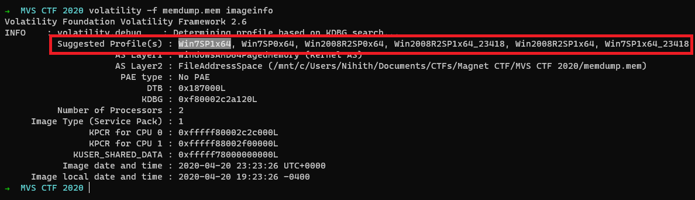
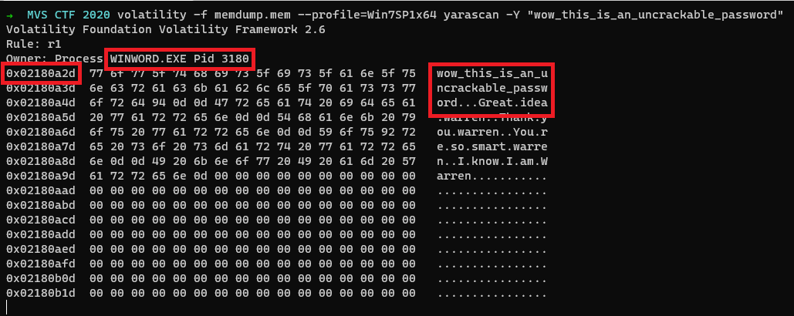
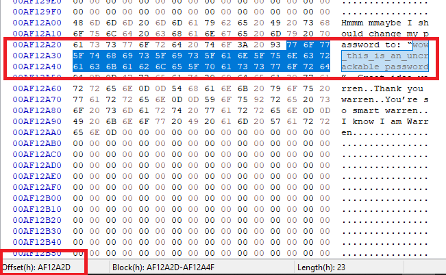

This week’s Memory Forensics challenge is divided into 7 really interesting parts. You can download the memory image here.
If you are new to Memory Forensics, you can check out Memlabs created by Abhiram Kumar. Here are my writeups for the same.
Initial Analysis
We are provided with a Windows memory dump. I’ll we be using Volatility to analyze and some command-line tools for extracting the relevant answers.
Finding Profile
We shall use the plugin imageinfo to find the profile for the memory dump.
$ volatility -f memdump.mem imageinfo
So let us use the profile as Win7SP1x64
Answering Part - 1
Descripton
The user had a conversation with themselves about changing their password. What was the password they were contemplating changing too. Provide the answer as a text string.
As the description talks about a conversation, it might be saved as plain text on the memory dump. So let us use the strings command and grep for the string password over the memory dump.
$ strings memdump.mem | grep -i password
[snip]
Hmmm mmaybe I should change my password to:
wow_this_is_an_uncrackable_password
[snip]Here is the interesting thing, we got the password.
Flag
wow_this_is_an_uncrackable_password
Answering Part - 2
Description
What is the md5 hash of the file which you recovered the password from?
So now comes the real part, what is md5sum of the file that they had a conversation with themselves. Where is this file located on the memory image? To find that out, we need to know which application, the user is using for opening this file.
As we already got the password string, Let us use yarascan.
$ volatility -f memdump.mem --profile=Win7SP1x64 yarascan -Y "wow_this_is_an_uncrackable_password"
From the above image, we can see the application as WINWORD.EXE with PID 3180 and the Virtual Offset where the password string is stored on the application memory is found at 0x02180a2d.
Upon searching for the document files(.doc or .docx) in files, nothing found useful. So let’s try out the handles plugin as it will give us all the open handles for a process.
$ volatility -f memdump.mem --profile=Win7SP1x64 handles -p 3180 -t File
Volatility Foundation Volatility Framework 2.6
Offset(V) Pid Handle Access Type Details
------------------ ------ ------------------ ------------------ ---------------- -------
[snip]
0xfffffa80326de810 3180 0x9c4 0x12019f File \Device\HarddiskVolume1\Users\Warren\AppData\Roaming\Microsoft\Word\AutoRecovery save of Document1.asd
[snip]We can see an open handle for AutoRecovery save of Document1.asd file and upon opening it we got the conversation that the user had with themselves.
Hmmm mmaybe I should change my password to: “wow_this_is_an_uncrackable_password”
Great idea warren
Thank you warren
You’re so smart warren
I know I am WarrenNow we got the file, the application in which the user opened this file, and the virtual offset for the password string.
According to the description, we need the md5 sum of this file.
$ md5sum AutoRecovery\ save\ of\ Document1.asd
af1c3038dca8c7387e47226b88ea6e23 AutoRecovery save of Document1.asdFlag
af1c3038dca8c7387e47226b88ea6e23
Answering Part - 3
Description
What is the birth object ID for the file which contained the password?
As we already got the filename, we can use the mftparser plugin and get the Birth Object ID.
$ volatility -f memdump.mem --profile=Win7SP1x64 mftparser --output-file=mftparser.txtUpon greping for the filename in mftparser.txt, here is what we got
$ grep -A 10 'AutoRecovery save of Document1.asd' mftparser.txt
2020-04-20 23:22:36 UTC+0000 2020-04-20 23:22:36 UTC+0000 2020-04-20 23:22:36 UTC+0000 2020-04-20 23:22:36 UTC+0000 Users\Warren\AppData\Roaming\MICROS~1\Word\AutoRecovery save of Document1.asd
$DATA
$OBJECT_ID
Object ID: 40000000-0000-0000-0060-000000000000
Birth Volume ID: 005a0000-0000-0000-0056-000000000000
Birth Object ID: 31013058-7f31-01c8-6b08-210191061101
Birth Domain ID: f81101e8-3101-3d66-f800-000000000000So we got the birth object id, so we got the flag.
Flag
31013058-7f31-01c8-6b08-210191061101
Answering Part - 4
Description
What is the name of the user and their unique identifier which you can attribute the creation of the file document to?
Format: #### (Name)
Now we need to find the owner of this file and the Unique identifier for the owner of this file.
We can get these details, by using the getsids plugin to find the owner of this process that eventually gives the owner of this file.
$ volatility -f memdump.mem --profile=Win7SP1x64 getsids | grep 'WINWORD.EXE\|3180'
WINWORD.EXE (3180): S-1-5-21-4288132831-552422005-3632184702-1000 (Warren)
WINWORD.EXE (3180): S-1-5-21-4288132831-552422005-3632184702-513 (Domain Users)
WINWORD.EXE (3180): S-1-1-0 (Everyone)
WINWORD.EXE (3180): S-1-5-114 (Local Account (Member of Administrators))
WINWORD.EXE (3180): S-1-5-32-544 (Administrators)
WINWORD.EXE (3180): S-1-5-32-545 (Users)
WINWORD.EXE (3180): S-1-5-4 (Interactive)
WINWORD.EXE (3180): S-1-2-1 (Console Logon (Users who are logged onto the physical console))
WINWORD.EXE (3180): S-1-5-11 (Authenticated Users)
WINWORD.EXE (3180): S-1-5-15 (This Organization)
WINWORD.EXE (3180): S-1-5-113 (Local Account)
WINWORD.EXE (3180): S-1-5-5-0-691206 (Logon Session)
WINWORD.EXE (3180): S-1-2-0 (Local (Users with the ability to log in locally))
WINWORD.EXE (3180): S-1-5-64-10 (NTLM Authentication)
WINWORD.EXE (3180): S-1-16-12288 (High Mandatory Level)From the 1st line in the above text, we can confirm that the Unique Identifier is 1000 and the User/Owner of this process as Warren.
Flag
1000 (Warren)
Answering Part - 5
Description
What is the version of software used to create the file containing the password?
Format ## (Whole version number, don’t worry about decimals)
I think there are a lot of ways to get the version of the software used to create the file containing the password.
I followed this, we can use the procdump plugin and dump the WINWORD.EXE and examining it gives the version of the software.
$ volatility -f memdump.mem --profile=Win7SP1x64 procdump -p 3180 -D dump
Volatility Foundation Volatility Framework 2.6
Process(V) ImageBase Name Result
------------------ ------------------ -------------------- ------
0xfffffa803177bb00 0x000000013f9f0000 WINWORD.EXE OK: executable.3180.exeNow we got the executable. we can now proceed and check the little-endian strings of this executable.
$ strings -el dump/executable.3180.exe
[snip]
StringFileInfo
000004E4
CompanyName
Microsoft Corporation
FileDescription
Microsoft Word
FileVersion
15.0.5233.1000
InternalName
WinWord
[snip]We got the version of the software used to create the file containing the password.
Flag
15
Answering Part - 6
Description
What is the virtual memory address offset where the password string is located in the memory image?
Format: 0x########
While answering part -2, yarascan gives the output from an application perspective, so we can use that address as the virtual address.
Flag
0x02180a2d
Answering Part - 7
Description
What is the physical memory address offset where the password string is located in the memory image?
Format: 0x#######
We need the offset from the memory perspective, so let us load the memory image into a hex editor and search for our password.

At the bottom of the image, you can see the offset where our password string started and we can use that as a physical memory address.
Flag
0x0AF12A2D
References
- Volatility Command reference: https://github.com/volatilityfoundation/volatility/wiki/Command-Reference